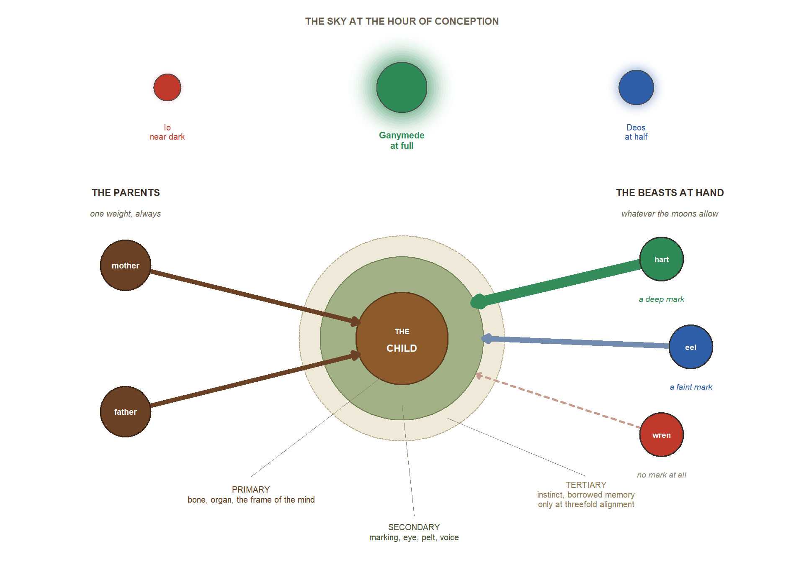

7 Confluence and Identity
7.1 The Biology of Becoming
Of all the wonders that EART-H doth harbour, none vexeth the learned so greatly as this: how it cometh to pass that children do take upon themselves the very likeness of those creatures who stood near at the hour of their begetting. For among all beings possessed of sufficient intricacy of mind—and this threshold doth encompass every humanoid kind, the greater part of mammals, most birds, and a surprising number of those slippery-armed cephalopods of the deep—offspring do not merely inherit the form of their mother and father. Nay, they emerge as composites, bearing upon their flesh the marks and tokens of other creatures of complex mind who chanced to be present at the very moment of conception.
Where precisely this threshold lieth, no two authorities will agree, and I have watched grown scholars shout at one another across a table upon the question. The schoolmen of Tusque hold that it is the eye which signifies, and that any creature which may be looked at and look back is capable of leaving its mark. The marsh-folk say it is the breath, and exclude the fishes on that ground. A physician of the Fingers assured me with great heat that fishes are excluded entirely, and was contradicted within the hour by their own apprentice, who had a cousin marked plainly by a pike. And I have heard it argued in all earnestness that the oaks are within the threshold, upon the reasoning that they are very old and must have learned something by now; and I have heard the same person laughed out of the room for saying so, and have since wondered whether the laughter settled anything.
The people of EART-H call this phenomenon Confluence, though I have heard it named by dozens of competing terms in as many provinces and scholarly houses. The mechanism remaineth poorly understood even by the most learned natural philosophers, yet its effects are as plain as daylight to any who have eyes to see. I myself have beheld a child born to two persons who had lain together in the presence of a fox—and that child emerged into the world with ears most cunningly pointed and rust-coloured markings spread across the shoulders, as though painted there by some unseen hand. Another child I saw in the northern reaches, conceived whilst ravens circled overhead in a great clamour, who was born with dark feathers in place of hair upon her head, and even small wings folded against her back—though these, I was assured, were not sufficient for flight.
Yet I would not have the reader suppose that every such tale is to be trusted, for I have been gulled myself and shall say so. In a market town of Adirondaq I paid good coin to be shown a child said to be marked by a dragon, and was shown a boy with a rash. There is besides, in every province I have entered, a brisk trade in conception-beasts — creatures hired out at great price for the chamber, warranted upon the seller’s honour to be of noble kind — concerning which I can report only that I have twice seen what I am confident was the same tired eagle sold as three different eagles in three different towns.
Set against that, I record the following, which I do not understand and will not pretend to. In the northern reaches I met a woman whose daughter bore markings that nobody in that whole country could put a name to: a pattern along the forearms like nothing that walks or swims or flies there, and eyes of a colour I have not seen before or since. The midwives swore upon their trade that no beast had been within the house that night, nor within the yard. The child’s grandmother told me, and would tell me nothing further, that the house had been built upon an old place.
7.2 The Mechanics of Confluence
Now I must tell you that the strength of Confluence doth vary with several factors, and chief among these is the phase and position of the three moons that wheel above this world. In every land I have passed through, the midwives and birth-keepers maintain elaborate calendars for the tracking of these celestial motions, inscribed upon scrolls of vellum or carved into great stones, and in many cultures the careful management of the chamber wherein conception taketh place hath become an art most refined and jealously practised.
Three principles govern the inheritance of traits under Confluence, and these I learned from wise ones in diverse provinces, who were in agreement upon the matter though they agreed upon little else:
Primary Inheritance floweth from the mother and father and determineth what the scholars call the “deep architecture” of the child: the bones, the organs, and the very foundations of the mind’s workings. A child of two humanoids shall always be fundamentally humanoid in form, howsoever many strange creatures may have stood about at the moment of conception. This I can attest from mine own observation, for I have never seen it otherwise.
Secondary Inheritance draweth from those creatures standing near, and manifesteth chiefly in outward characteristics: the colour and markings of the skin, the texture of hair or hide, and certain lesser structural variations. In the eastern provinces I beheld a child conceived near a great cat of the mountains, who had pupils that narrowed to vertical slits in bright light—yet retractable claws, I was told, are a most rare inheritance. Another child, conceived near a songbird, possessed a voice of surpassing sweetness and perfect pitch, with delicate feathers growing along the forearms, though flight was quite beyond her.
Tertiary Effects are rarer still and most unpredictable. In moments of exceptional lunar convergence—when all three moons do align within fifteen degrees of arc, as the astronomers reckon it—offspring may inherit strange predispositions of behaviour, instinctual knowledge such as no teaching could impart, or even fragments of memory from the proximate creatures, as though dreams had passed from one mind into another yet unformed. These events occur perhaps twice in a generation, and they are surrounded by such superstition and fearful wonder as I can scarce describe.
So the scheme runs, and I set it down faithfully because every learned person I met recited some version of it to me, often within the first hour of our acquaintance. I am bound to add that in the course of my travelling I collected eleven accounts the scheme cannot hold. A child in Salmon whose deep architecture was of no humanoid kind I ever saw, and whose parents were plain as bread. A pair of twins in Tusque, conceived in one hour in one room with one goat standing by, of whom one came out marked and the other did not. And the matter of the fisher-village upon the Kiliman coast, where for three generations every child has been born bearing the marks of the same creature, though that creature has not been seen there in living memory and the villagers will not say its name where a stranger can hear.
I put these cases to the scholars, who told me that exceptions do not overturn a rule. I am a cartographer. In my trade, a coast that is in the wrong place overturns the map.
7.4 The Question of Identity
Now I must speak of a question that hath vexed the philosophers of every land through which I have journeyed, and it is this: what doth it mean to be oneself, when one’s very body beareth the imprint of creatures who happened to stand nearby at a moment one cannot remember? The wise ones of EART-H have wrestled with this riddle for millennia, and in my travels I encountered three great schools of thought upon the matter, each holding its ground as fiercely as any fortress.
The first school, and the most widely held in the greater number of cultures, maintaineth that Confluence traits are but incidental things—decorations and adornments laid upon a core self that remaineth in its essence continuous with one’s mother and father and their parents before them. The fox-touched child, they say, is still fundamentally the child of humanoid parents; the pointed ears and russet markings are surface, not substance, no more the true self than a cloak is the one who wears it. I heard this doctrine expounded with great confidence by learned clerks in the western cities, and it seemeth to give much comfort to those who hold it.
But in the mountain provinces and among the marsh-folk of the eastern deltas, I encountered dissenting traditions that argue most strenuously otherwise. The Confluence, these wise ones do suggest, maketh us more than we should have been without it—it connecteth us to a broader web of consciousness that doth transcend the boundaries between species, as threads are woven into a tapestry far grander than any single strand. To bear the marks of the raven, they say, is to carry something of raven-ness within oneself: not merely in outward semblance, but in the very manner of one’s thought and perception. These traditions have developed elaborate practices of communion and reverence, whereby the marked do honour the creatures whose influence they bear, and seek to know them more deeply.
A third position, which I found gaining adherents among the natural philosophers of the great university cities in recent centuries, doth suggest that the question itself is ill-formed and leadeth only into confusion. Identity, these scholars argue, was never the stable and bounded essence that the other traditions had imagined it to be. Confluence merely maketh visible what was always true: that we are assemblages, composites, beings constituted through our relations with all that surroundeth us. The child who beareth fox-marks is not diminished by this—nor elevated—but simply is what they are: a configuration unique and unrepeatable, that hath never existed before in all the ages of the world, and shall never exist again.
7.5 Practical Implications
| Factor | What the Wise Ones Say | How the People Respond |
|---|---|---|
| The Moons | When the moons draw close together, the strangest and deepest traits may pass — behaviours, instincts, even fragments of memory | Conception calendars, lunar tracking guilds |
| Nearness of Creature | The nearer the creature standeth, the stronger its mark upon the child; those in the very chamber leave the deepest impression | Sealed birthing chambers, creature exclusion zones |
| Intricacy of Mind | Creatures of greater wit and cunning — the great cats, the ravens, the cephalopods — transfer more readily than simpler beasts | Companion animal selection, vermin control |
| Duration of Presence | A creature that remaineth present throughout the act leaveth a far stronger mark than one that merely passeth by | Timed rituals, rotation of witnesses |
| Temperament of the Beast | A creature in a state of agitation or fear doth transfer more intensely than one at rest; hence the practice of calming draughts | Calming draughts, sedation of animals |
| Sacred Ground | Near the great sacred sites of RA, Confluence behaveth most unpredictably — sometimes amplified, sometimes twisted into forms no midwife can foresee | Pilgrimage for conception, or careful avoidance |
The ubiquity of Confluence hath shaped nearly every aspect of daily life upon EART-H, as I observed with mine own eyes in province after province. The very architecture of their dwellings doth incorporate cunning features for the exclusion of creatures from sleeping quarters—heavy doors, fine-meshed screens, and sealed chambers of stone and plaster. The nomadic peoples of the great plains do time their movements most carefully, so as to avoid the act of conception during migrations through territories rich in undesirable fauna. I visited the estates of wealthy families who maintain elaborate menageries of prestigious animals—eagles in gilded mews, white tigers in perfumed enclosures, luminous deep-sea creatures in great tanks of glass—all kept near the bedchamber for the purpose one may readily imagine. Meanwhile, the poor may find themselves conceiving in proximity to whatever creatures share their humble quarters, which is to say, most commonly, rats and domestic animals of low station.
The trade in what the folk call “conception companions” representeth a most significant commerce in many regions. These are creatures—carefully selected for the beauty or prestige of their kind, well-trained in docility, and often sedated with herbal draughts to ensure a calm emotional state—that are rented or purchased by families who desire particular traits for their offspring. The ethics of this practice are hotly debated in every marketplace and scholarly hall: the critics argue that it doth constitute a form of breeding most unnatural and unjust, whilst the defenders note that it merely systematizeth and refineth what hath always occurred by nature’s own hand, whether folk willed it or no.
The physicians and medical practitioners of EART-H have over the centuries developed most sophisticated knowledge of which traits are likely to pass from which creatures, and under what conditions of moon and proximity and temperament. This knowledge is closely guarded by professional guilds in some regions, kept in locked books and taught only to sworn apprentices, whilst in other lands it is freely shared among all who seek it. Yet even the most learned practitioners will confess that the accuracy of their predictions remaineth imperfect—for Confluence, like so much else upon EART-H, retaineth always an element of irreducible chance, as though the world itself delighteth in confounding the expectations of the wise.
7.6 An Unfinished Experiment
Now I come to the question that haunteth me most of all, and which I have turned over in my mind through many sleepless nights upon the road: why did RA, that great and inscrutable maker, design Confluence into the very fabric of EART-H? This question doth haunt all those who study the world’s origins, and none can answer it with certainty. Some among the scholars argue that it was done with full intention—a mechanism wrought deliberately to prevent the ossification of the boundaries between species, to keep the world in a state of perpetual creative flux, so that no kind should ever grow stale or fixed in its nature. Others suggest it was but an accident, an unintended consequence of the three moons’ magical resonance with all creatures possessed of sufficient intricacy of mind, no more planned than the echo that followeth a shout in a canyon.
But the most troubling possibility of all—and this I heard only in whispers, in the back rooms of certain scholarly houses, spoken behind closed doors and with much looking over of shoulders—is that Confluence is not merely a phenomenon of biology but a form of collection and observation. Each child born representeth a new combination, a new trial. Perhaps RA—or whatever vast intelligence doth continue to observe EART-H from beyond the veil of the visible—is using the world’s inhabitants to explore the full space of possible beings, to discover what forms consciousness might assume when freed from the constraints of stable inheritance, as a gardener might cross one flower with another and another, endlessly, to see what bloometh.
If this be so—and I confess the thought maketh my hand tremble as I write—then the people of EART-H are not merely the subjects of an experiment. They are its very products: each one unique, each one a hypothesis about what life might yet become.
The concept of Confluence draws on several bodies of scholarship that have informed my thinking about race, identity, and social hierarchy. The fundamental insight—that visible markers of difference need not produce stable hierarchies —emerges from thinking about what conditions are necessary for the construction of racial categories as we know them. Scholars like Karen and Barbara Fields (Racecraft) (Fields and Fields 2012) have argued that race is not simply a matter of visible difference but of the social practices and institutional structures that give those differences meaning. The term ‘racecraft’ is meant to liken our obsession with racial meaning with earlier obsession with witchcraft that we now know to be absurd. By making the practice of producing outward difference something that is at once more and less controllable, I hope to draw the focus of gameplay in the world to the way that these differences come to be constructed and come to matter.
The biological mechanism of Confluence is, of course, pure fantasy. But it draws loose inspiration from the biological phenomenon of horizontal gene transfer, particularly common in bacteria, where genetic material passes between organisms outside of reproduction. The fantasy version extends this to phenotypic expression in complex organisms—something that has no basis in real biology but serves the narrative purpose of denaturalizing the assumptions we bring to questions of inheritance and identity.
The philosophical debates about identity sketched in this chapter draw on longstanding questions in philosophy of mind and personal identity, but also on more recent work in disability studies and critical theory that questions the notion of a bounded, autonomous self. Theorists like Mel Chen (Animacies) (Chen 2012) have explored how the boundaries between human and animal, animate and inanimate, are less stable than we typically assume—Confluence makes this instability visible and generative.
My extended reading list for this chapter:
- Racial Formation in the United States, Michael Omi and Howard Winant (Omi and Winant 2014) — race as a set of political projects, continuously remade through struggle.
- Racecraft, Karen and Barbara Fields (Fields and Fields 2012) — race as a practice rather than a given.
- Racial Domination, Loïc Wacquant (Wacquant 2024) — argues that “race” is an analytic trap and that domination is the better object of study.
- “Making Up People”, Ian Hacking (Hacking 2002) — classifications bring into being the kinds of people they name, and those people then act back upon the classification.
- Modest_Witness@Second_Millennium.FemaleMan©_Meets_OncoMouse™, Donna Haraway (Haraway 1997) — kinship manufactured through technoscience, and the question of who is authorised to certify what counts as natural.
- Staying with the Trouble, Donna Haraway (Haraway 2016) — making kin, sympoiesis, becoming-with rather than descending-from.
- Purity and Danger, Mary Douglas (Douglas 1966) — anomaly as the source of both holiness and pollution. Why the unmarked are revered in some provinces and pitied in others, and why it could hardly be otherwise.
- Stigma, Erving Goffman (Goffman 1963) — visible versus discreditable marks, and the daily management of an identity that others read off the body.
- “Cosmological Deixis and Amerindian Perspectivism”, Eduardo Viveiros de Castro (Viveiros de Castro 1998) — in Amerindian perspectivism the soul is the constant and the body the variable: all beings see themselves as human, and what differs is the bodily clothing.
- Native American DNA, Kim TallBear (TallBear 2013) — biological ancestry claims colliding with political belonging.